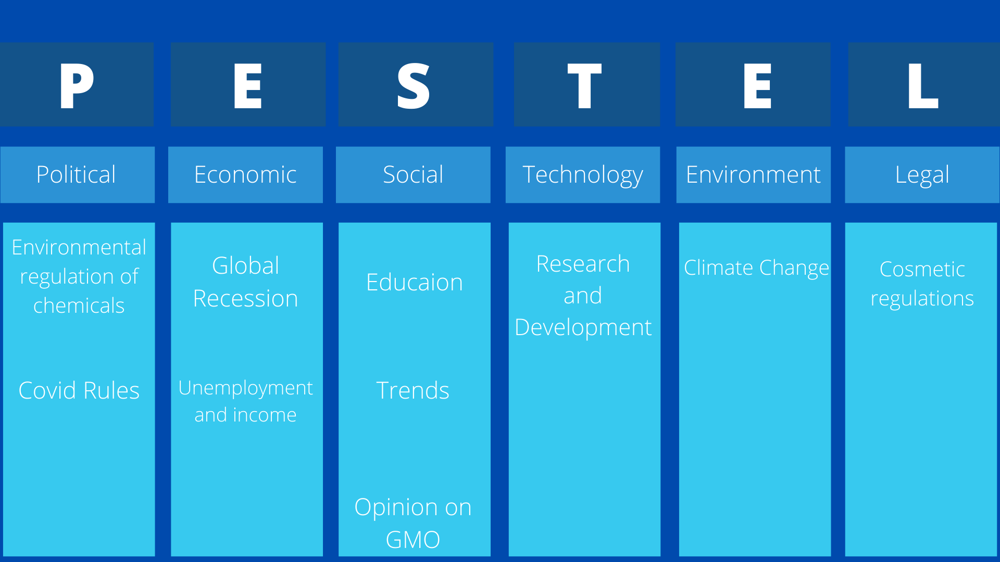

Introduction
In order to predict how well our product would perform, we used PESTEL analysis. This is a tool used in business to monitor macro-level factors that could affect the success of a business or organisation (Business to you, 2016) This is used as a complementary to last year’s SWOT analysis.
PESTEL is an acronym that stands for Political, Economic, Social, Technology, Environment and Legal, which are macro factors that can influence the performance of an organization in a market.
We picked up a few key factors within each category and hypothesized how they could affect the launch and performance of Shinescreen in the future.
Figure 1. All significant key factors that we believe could play a role in Shinescreen’s performance on the sunscreen market.
Political
The biggest factor that could impact our product is the further banning of toxic sunscreen chemicals such as ZnO. Hawaii has already banned the selling of sunscreen containing oxybenzone and octinoxate, a law that came into effect 1st of January 2021 (HNN Staff, 2021) and Palau was the first country to ban “reef-toxic” sunscreen in 2020 (BBC, 2020). This would likely make Shinescreen more attractive as other companies have to rebrand and remake their formulas while Shinescreen is already on the market. It will also help the reef-safe sunscreen market grow as there will be a bigger interest meaning that we will have a greater chance to receive funding to develop our concept and formula.
Another significant factor is if different countries decide to implement stricter rules to try to reduce covid cases such as national lockdowns or more requirements if you wish to enter a certain country, which would reduce tourism. In turn, it would reduce the demand for sunscreen as people do not travel to warm places for holidays. Even in warm places, the demand for sunscreen would decrease as people are forced to spend less time outside.
Economic
The main factor that would reduce the demand for our product is the continuation of the global recession due to the Covid-pandemic (The World Bank, 2020) caused by new forms of mutations to the existing covid strand. Already the pandemic has caused people to lose their jobs or gotten lower household incomes (CBPP, 2021), meaning that more people would not have had the means to travel to sunny places and/or beaches and hence not need the sunscreen, nor be able to afford the sunscreen or deprioritize sunscreen. The sunscreen market has projected a CAGR of around 7%, however, due to the pandemic, there has been a significant drop in demand and sales. In the US alone the sales for sunscreen dropped by almost 20%. On account of this, continuation of the pandemic would most likely continue this trend and making it hard for us to launch our sunscreen because the fall the in demand (Fact.MR, 2020).
Social
The current trend of climate consciousness in the world leads to more people becoming educated about environmental issues and prompting people to make more eco-friendly decisions, which favours our product.
However, last year’s sunscreen study showed that 8.70% strongly disagreed and 10% disagreed when asked how much they agree with the statement that GMOs was safe for human health, showing that GMOs is still a controversial topic among the general public. This could impact the willingness of customers to buy our product as we genetically modify bacteria, although the majority agreed or were neutral to the statement. In the same study questions regarding probiotics were also asked if people were comfortable with applying a probiotic cream on their skin, where the majority responded Very comfortable or comfortable. This suggests that there is a demand and market opening for our product as customers seem to be willing to purchase probiotic sunscreen (iGEM St Andrews 2020, 2020), and we would be one of few probiotic sunscreen companies.
Technology
Our idea of using probiotic sunscreen and our method, as outlined in our project section, is relatively new and not much research has been done. Therefore, as more research and development are made in this area, the more we can improve our product.
Environment
Several reports, including NASA’s (NASA, 2021) and IPPCC special report (Arneth et al., 2019) show increasing global regional temperatures, making people start to become more concerned about the environment and try to seek products that are environmentally friendly, such as our product. Otherwise, there are not many significant environmental factors.
Legal
In general, we need to consult with a lawyer about which legal factors we need to think about, especially as the cosmetic regulations in the United Kingdom and Europe are complex.
Conclusion
The main factors which can have both positive and negative impacts on the success of our sunscreen are social factors relating to trends and opinions of the use of GMO and probiotics, Economic factors such as a global recession and household income, and Political factors like bans on other sunscreen ingredients. As these factors are highly variable it is important that we keep tracking them to be aware of the status quo and find the right time to launch Shinescreen, as well as incorporating strategies for them in our business plan and SMART goals.
References
BBC (2020) ‘Palau is first country to ban “reef toxic” sun cream’, BBC News, 1 January. Available at: https://www.bbc.com/news/world-asia-50963080 (Accessed: 19 July 2021).
Business to you (2016) Scanning the Environment: PESTEL Analysis, Business-to-you. Available at: https://www.business-to-you.com/scanning-the-environment-pestel-analysis/ (Accessed: 19 July 2021).
CBPP (2021) Tracking the COVID-19 Recession’s Effects on Food, Housing, and Employment Hardships, Center on Budget and Policy Priorities. Available at: https://www.cbpp.org/research/poverty-and-inequality/tracking-the-covid-19-recessions-effects-on-food-housing-and (Accessed: 19 July 2021).
Fact.MR (2020) Sun Protection Products Market, Fact.MR. Available at: https://www.factmr.com/report/140/sun-protection-products-market (Accessed: 22 July 2021).
HNN Staff (2021) ‘Hawaii’s ban on coral-harming sunscreens goes into effect New Year’s Day’, Hawaii News Now, 1 January. Available at: https://www.hawaiinewsnow.com/2020/12/31/hawaiis-ban-coral-harming-sunscreens-goes-into-effect-new-years-day/ (Accessed: 19 July 2021).
iGEM St Andrews 2020 (2020) Human Practices, Shinescreen. Available at: https://2020.igem.org/Team:St_Andrews/Human_Practices#Shinescreen%20Case%20Study (Accessed: 19 July 2021).
NASA (2021) Global Surface Temperature | NASA Global Climate Change, Climate Change: Vital Signs of the Planet. Available at: https://climate.nasa.gov/vital-signs/global-temperature (Accessed: 19 July 2021).
The World Bank (2020) COVID-19 to Plunge Global Economy into Worst Recession since World War II, World Bank. Available at: https://www.worldbank.org/en/news/press-release/2020/06/08/covid-19-to-plunge-global-economy-into-worst-recession-since-world-war-ii (Accessed: 19 July 2021).